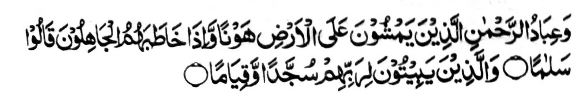
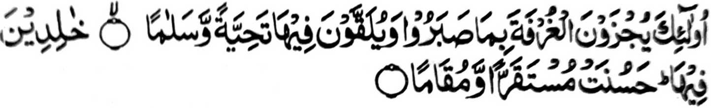

“Na so manga oripen o (Allah a) Masalinggagao na so phelalakao siran ko lopa sa kapangalimbaba-an, go igira inimbitiyara-i siran o manga lalong, na tharo siran sa kalilintad. Go siran na gi-i siran mbabasagawi-i sa rek o Kadnan niran a khisosodod, go khigaganat.” (Surah Al-Furqan: 63-64)
Si-i ko oriyan o kiniropa o saba-ad a sipat o manga maonoten a oripen Niyan, na pitharo o Allah ko makapantag si-i:

“Siran man na imbalas kiran so pangkatan a maporo, sabap ko kiyaphantang iran: go alaon siran ro-o a kormat, a go salam. Makakakal siran ro-o; miyakapiya-piya a kapethakena-an, go darepa.” (Surah Al-Furqan: 75-76)